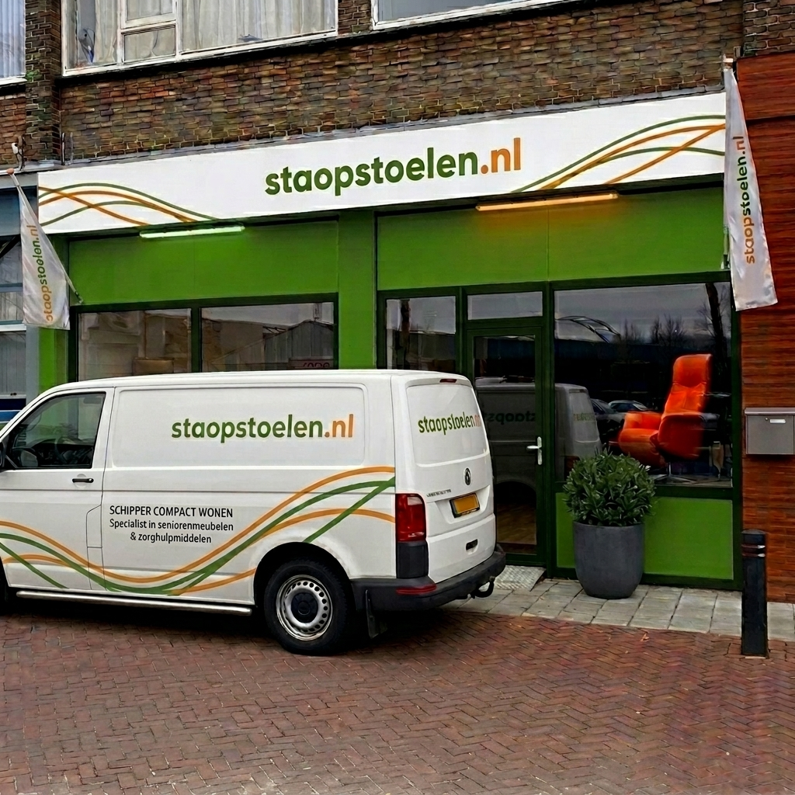

Over Ons
Over staopstoelen.nl
Maak kennis met onze organisatie, onze voordelen en onze passie voor zithulpmiddelen op maat.

Maak kennis met onze organisatie, onze voordelen en onze passie voor zithulpmiddelen op maat.
Merkt u dat opstaan uit uw favoriete stoel steeds moeizamer gaat? Of krijgt u na verloop van tijd last van uw rug of benen? Bij staopstoelen.nl (onderdeel van Schipper Compact Wonen) begrijpen we dat een goede stoel niet alleen mooi moet zijn, maar uw lichaam vooral optimaal moet ondersteunen.
Als dé erkende zitspecialist van de regio Dordrecht en omstreken helpen we u graag uw mobiliteit en zelfstandigheid terug te krijgen. Met al bijna 30 jaar ervaring leveren we topkwaliteit zitcomfort aan particulieren, zorginstellingen en zorgverzekeraars.

Gediplomeerd Bewegingstechnoloog
Geertjan is onze vaste bewegingstechnoloog en expert op het gebied van ergonomie en gezond zitten. Geen stoel verlaat onze showroom zonder dat deze door Geertjan tot op de centimeter nauwkeurig is ingesteld op uw ideale zithoogte, zitdiepte en armleggerhoogte. Zo bent u verzekerd van een stoel die als gegoten zit.
Als gecertificeerd dealer beschikt Bewegingstechnoloog Geertjan over rechtstreekse fabriekslijnen met Wellco/Fitform. Hierdoor bent u verzekerd van 100% originele onderdelen, officiële fabrieksgarantie en specialistische maatwerkinmeting volgens het Fitform ergonomie-protocol.
Ontdek onze Fitform Showroom in Dordrecht →Gratis en vakkundig bij u thuis geleverd
Nadat u in onze showroom in Dordrecht uw ideale stoel heeft uitgekozen, bezorgen wij deze gratis, vakkundig en gebruiksklaar bij u thuis met onze eigen bezorgbus. Onze bezorger stelt de stoel ter plekke direct perfect af op uw ideale zithoogte en zitdiepte, en legt de werking rustig en duidelijk aan u uit.

Een goede sta-op stoel is meer dan alleen een comfortabel meubelstuk; het is een investering in uw dagelijkse zelfstandigheid en gezondheid:
Omdat zithulpmiddelen persoonlijk zijn, adviseren wij altijd om een stoel eerst te voelen en uit te proberen. U bent van harte welkom in onze goed gevulde winkel in Dordrecht om ons aanbod vrijblijvend te bekijken en deskundig advies te ontvangen.
Parkeren kan gratis direct voor de deur aan de Merwedestraat 239. Heeft u uw ideale stoel gevonden? Dan zorgen wij voor een snelle, gratis en vakkundige thuisbezorging inclusief installatie en instructie in uw eigen woonkamer.

Schipper Compact Wonen aan de Merwedestraat 239
Alweer vele jaren is Schipper Compact Wonen te vinden aan de Merwedestraat 239. 'Vroeger' zat de zaak aan de overkant, weten velen zich nog te herinneren. Al een kleine tien jaar zit de winkel aan de 'kant' van de woningen. Parkeren kan voor de deur.